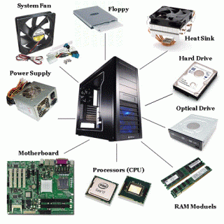
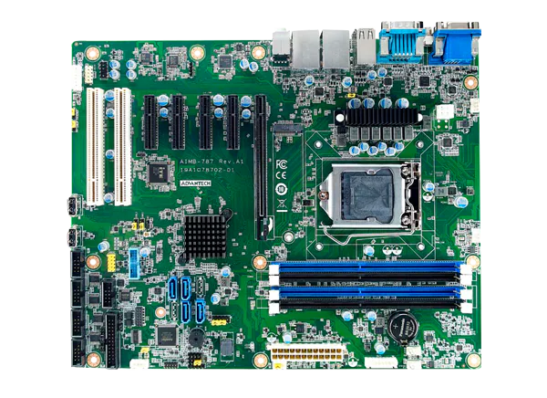
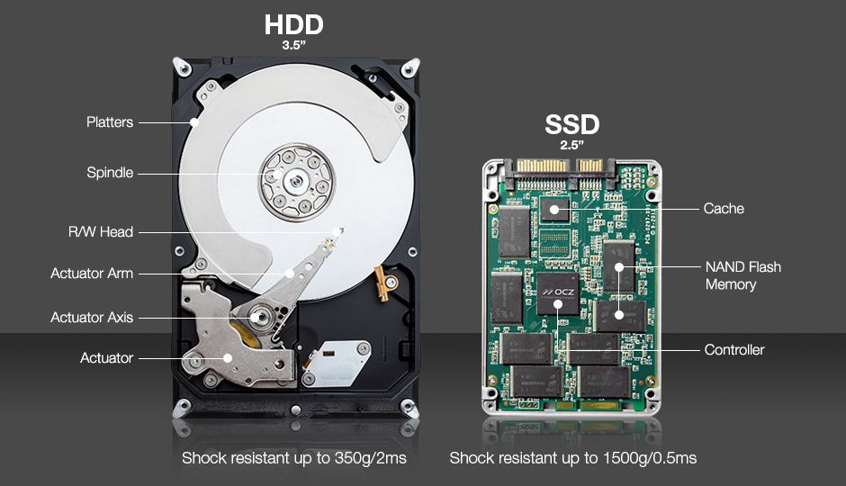
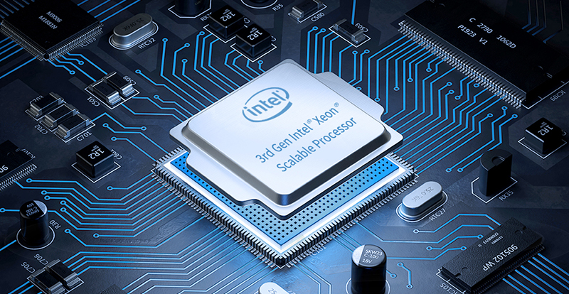
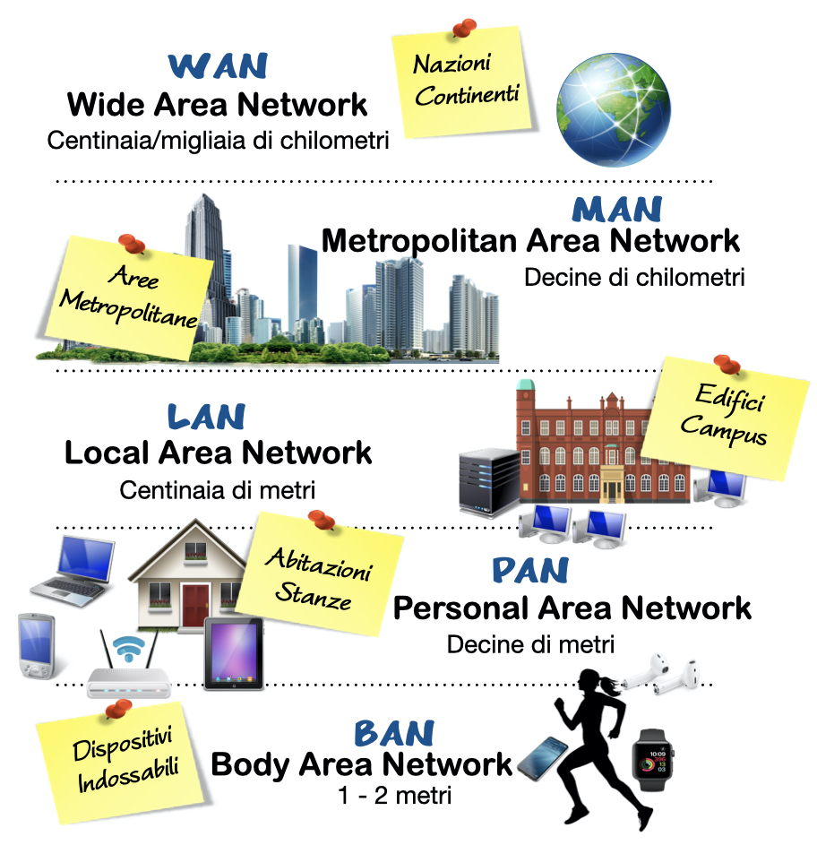

SISTEMI E RETI
questa materia d'indirizzo è suddivisibile a sua volta in:
Nel triennio di un istituto tecnico informatico, la parte dedicata a sistemi e reti si concentra su diverse aree fondamentali dell'informatica e delle telecomunicazioni.
Architettura dei sistemi informatici
Analisi dell'hardware e delle componenti di un computer, inclusi processori, memoria, dispositivi di input/output e schede di rete.
Sicurezza informatica

Tecniche di protezione dei dati, crittografia, firewall e metodi di autenticazione per garantire la sicurezza di sistemi e reti.
La sicurezza informatica è un ambito cruciale dell'informatica che si occupa di proteggere sistemi, reti e dati da attacchi, accessi non autorizzati e danni. Le tecniche utilizzate spaziano dalla protezione fisica dei dispositivi alla sicurezza software
studio hardware di un computer

Lo studio dell'hardware di un computer riguarda l'analisi, il funzionamento e l'interazione tra i vari componenti fisici che costituiscono un sistema informatico
Lo studio riguarda nel dettaglio tutte le caratteristiche e il funzionamento di ogni elemento hardware come: cpu,ram, scheda madre e tutte le componenti che strutturano un pc.
LA SCHEDA MADRE

che cos'è la scheda madre di un computer?
La scheda madre è il cuore di un computer, il componente che collega e coordina tutte le altre parti hardware affinché funzionino in armonia. Essa agisce come un grande centro di comunicazione, permettendo a processore, memoria RAM, disco di archiviazione, scheda video e periferiche di interagire tra loro attraverso diversi canali di trasmissione dei dati. Ogni scheda madre è progettata con un insieme di circuiti stampati, slot di espansione e connettori che ospitano le varie componenti e ne regolano la compatibilità.
Le memorie

Le memorie di un computer sono dispositivi fondamentali per la conservazione e la gestione delle informazioni. Esistono diverse tipologie, ciascuna con caratteristiche specifiche. La RAM è una memoria veloce e volatile, essenziale per il funzionamento dei programmi, mentre gli SSD e gli HDD sono unità di archiviazione più permanenti, con velocità e resistenza variabili. La cache della CPU accelera l’elaborazione dei dati, riducendo i tempi di accesso alla RAM. Infine, le memorie flash e ottiche permettono la memorizzazione su supporti rimovibili. Ogni tipo di memoria ha un ruolo cruciale nel garantire prestazioni elevate e un’archiviazione sicura.
altre componenti
Un computer è composto da diversi elementi che collaborano per garantire il funzionamento del sistema. La CPU è il processore che esegue i calcoli e le istruzioni, determinando le prestazioni complessive. La GPU gestisce l’elaborazione grafica, fondamentale per videogiochi e applicazioni visive. Il sistema di alimentazione fornisce energia alle componenti, mentre il sistema di raffreddamento previene il surriscaldamento con ventole e dissipatori. Le periferiche, come tastiera, mouse e monitor, consentono l’interazione tra utente e macchina. Infine, le interfacce di connessione, come porte USB e HDMI, permettono di collegare dispositivi esterni e garantiscono la comunicazione tra i vari componenti. Tutti questi elementi formano un ecosistema integrato, essenziale per il corretto funzionamento del computer.
La CPU

La CPU, o unità centrale di elaborazione, è il componente che esegue le istruzioni e gestisce il funzionamento del computer. Agisce come il cervello del sistema, elaborando dati e coordinando le operazioni tra i vari dispositivi. È composta da core che eseguono i calcoli, registri che memorizzano temporaneamente le informazioni e cache che accelera l’accesso ai dati frequenti. La velocità della CPU è determinata dalla frequenza di clock e dall’architettura, influenzando la rapidità nell’esecuzione dei programmi. L’evoluzione dei processori ha portato a modelli multi-core e sistemi di parallelismo avanzato, migliorando le prestazioni e l’efficienza energetica. Senza la CPU, il computer non potrebbe interpretare e processare le istruzioni necessarie al suo funzionamento.
Le reti
Le reti informatiche studiate in un istituto tecnico informatico riguardano la comunicazione tra dispositivi e la gestione dei dati. Si analizzano protocolli come TCP/IP, il modello OSI, l’architettura client-server e la configurazione di LAN e WAN. Si approfondisce la sicurezza delle reti, con firewall, VPN e crittografia, oltre alla manutenzione e al troubleshooting per garantire stabilità ed efficienza. La conoscenza delle reti è essenziale per comprendere il funzionamento di internet e delle infrastrutture aziendali.
Tipologie di reti
Le tipologie di rete informatica si differenziano in base alla loro estensione e al modo in cui i dispositivi si connettono tra loro. Le LAN (Local Area Network) sono reti locali che coprono piccoli spazi come uffici o scuole, garantendo comunicazioni rapide tra dispositivi vicini. Le WAN (Wide Area Network) invece si estendono su aree geografiche più ampie, collegando città o nazioni tramite infrastrutture avanzate. Esistono anche le WLAN (Wireless Local Area Network), che utilizzano connessioni senza fili per facilitare la mobilità degli utenti. Le MAN (Metropolitan Area Network) coprono città intere e sono spesso gestite da enti pubblici o aziende. Infine, le PAN (Personal Area Network) sono reti personali che collegano dispositivi come smartphone e smartwatch a breve distanza. Ogni tipo di rete ha specifiche applicazioni e vantaggi in termini di velocità, sicurezza e accessibilità.
Topologie di rete

Le topologie di rete definiscono il modo in cui i dispositivi sono interconnessi all'interno di un sistema. La topologia a bus utilizza un unico cavo centrale a cui tutti i nodi si collegano, favorendo una struttura semplice ma limitata in termini di scalabilità. La topologia a stella prevede un dispositivo centrale, come un switch, a cui tutti i computer sono connessi, migliorando la gestione e la stabilità della rete. La topologia ad anello forma una connessione circolare, dove ogni nodo è collegato al successivo, permettendo una trasmissione dati continua ma con rischi legati al guasto di un singolo elemento
Attività di laboratorio
in cosa consistono?
Le attività di laboratorio di sistemi e reti in un istituto tecnico informatico si focalizzano sulla pratica e sull’applicazione concreta dei concetti studiati in teoria. Gli studenti lavorano su configurazioni di hardware e software, imparando a installare e gestire sistemi operativi, configurare server e ottimizzare le prestazioni delle reti. Un aspetto centrale è la gestione dell’infrastruttura di rete, che include la creazione di connessioni cablate e wireless, la configurazione di router e switch, e l’implementazione di protocolli come TCP/IP. Si studia anche la sicurezza informatica, testando firewall, VPN e tecniche di crittografia per proteggere i dati e prevenire attacchi informatici. Durante le esercitazioni, gli studenti simulano scenari reali di troubleshooting, risolvendo problemi di rete e ottimizzando la comunicazione tra dispositivi. Il laboratorio rappresenta un ambiente dinamico dove sperimentare, sbagliare e affinare le competenze necessarie per il mondo professionale.